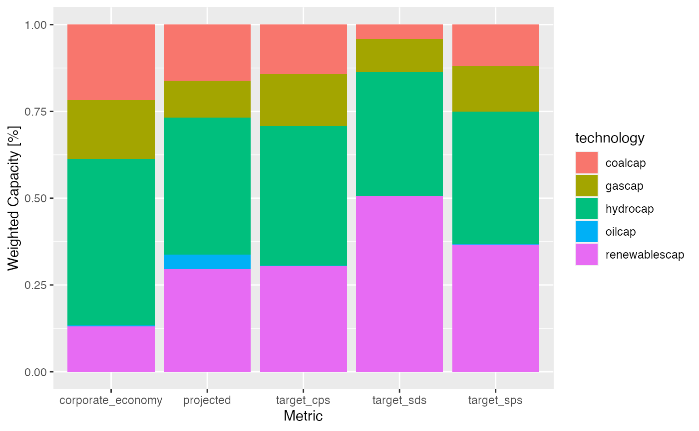
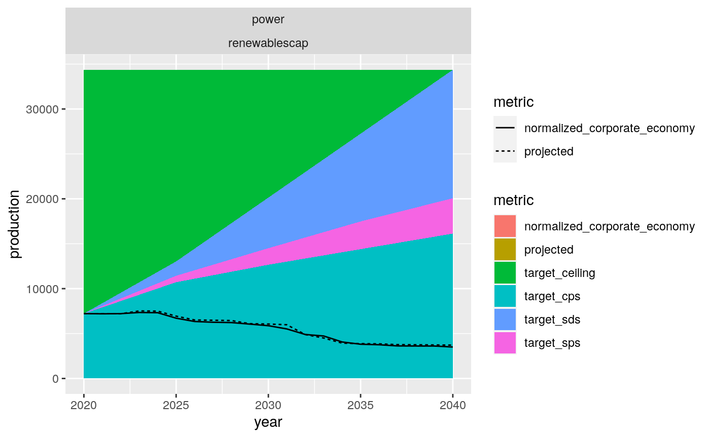

Load your r2dii libraries
The first step in your analysis will be to load in the recommended r2dii packages into your current R session. r2dii.data includes fake data to help demonstrate the tool and r2dii.match provides functions to help you easily match your loanbook to asset-level data.
We also recommend packages in the tidyverse; they are optional but useful.
library(tidyverse)
#> ── Attaching packages ─────────────────────────────────────── tidyverse 1.3.0 ──
#> ✔ ggplot2 3.3.3 ✔ purrr 0.3.4
#> ✔ tibble 3.0.4 ✔ dplyr 1.0.2
#> ✔ tidyr 1.1.2 ✔ stringr 1.4.0
#> ✔ readr 1.4.0 ✔ forcats 0.5.0
#> ── Conflicts ────────────────────────────────────────── tidyverse_conflicts() ──
#> ✖ dplyr::filter() masks stats::filter()
#> ✖ dplyr::lag() masks stats::lag()
Calculate targets
You can calculate scenario targets using two different approaches: Market Share Approach, or Sectoral Decarbonization Approach.
Market Share Approach
The Market Share Approach is used to calculate scenario targets for the production of a technology in a sector. For example, we can use this approach to set targets for the production of electric vehicles in the automotive sector. This approach is recommended for sectors where a granular technology scenario roadmap exists.
Targets can be set at the portfolio level:
# Use these datasets to practice but eventually you should use your own data.
scenario <- r2dii.data::scenario_demo_2020
regions <- r2dii.data::region_isos_demo
market_share_targets_portfolio <- matched %>%
target_market_share(
ald = ald,
scenario = scenario,
region_isos = regions
)
market_share_targets_portfolio
#> # A tibble: 3,492 x 8
#> sector technology year region scenario_source metric production
#> <chr> <chr> <int> <chr> <chr> <chr> <dbl>
#> 1 autom… electric 2020 global demo_2020 proje… 324592.
#> 2 autom… electric 2020 global demo_2020 targe… 324592.
#> 3 autom… electric 2020 global demo_2020 targe… 324592.
#> 4 autom… electric 2020 global demo_2020 targe… 324592.
#> 5 autom… electric 2021 global demo_2020 proje… 339656.
#> 6 autom… electric 2021 global demo_2020 targe… 329191.
#> 7 autom… electric 2021 global demo_2020 targe… 352505.
#> 8 autom… electric 2021 global demo_2020 targe… 330435.
#> 9 autom… electric 2022 global demo_2020 proje… 354720.
#> 10 autom… electric 2022 global demo_2020 targe… 333693.
#> # … with 3,482 more rows, and 1 more variable: technology_share <dbl>
Or at the company level:
market_share_targets_company <- matched %>%
target_market_share(
ald = ald,
scenario = scenario,
region_isos = regions,
# Output results at company-level.
by_company = TRUE
)
#> Warning: You've supplied `by_company = TRUE` and `weight_production = TRUE`.
#> This will result in company-level results, weighted by the portfolio
#> loan size, which is rarely useful. Did you mean to set one of these
#> arguments to `FALSE`?
market_share_targets_company
#> # A tibble: 14,604 x 9
#> sector technology year region scenario_source name_ald metric production
#> <chr> <chr> <int> <chr> <chr> <chr> <chr> <dbl>
#> 1 autom… electric 2020 global demo_2020 toyota … proje… 324592.
#> 2 autom… electric 2020 global demo_2020 toyota … targe… 324592.
#> 3 autom… electric 2020 global demo_2020 toyota … targe… 324592.
#> 4 autom… electric 2020 global demo_2020 toyota … targe… 324592.
#> 5 autom… electric 2021 global demo_2020 toyota … proje… 339656.
#> 6 autom… electric 2021 global demo_2020 toyota … targe… 329191.
#> 7 autom… electric 2021 global demo_2020 toyota … targe… 352505.
#> 8 autom… electric 2021 global demo_2020 toyota … targe… 330435.
#> 9 autom… electric 2022 global demo_2020 toyota … proje… 354720.
#> 10 autom… electric 2022 global demo_2020 toyota … targe… 333693.
#> # … with 14,594 more rows, and 1 more variable: technology_share <dbl>
Sectoral Decarbonization Approach
The Sectoral Decarbonization Approach is used to calculate scenario targets for the emission_factor of a sector. For example, you can use this approach to set targets for the average emission factor of the cement sector. This approach is recommended for sectors lacking technology roadmaps.
# Use this dataset to practice but eventually you should use your own data.
co2 <- r2dii.data::co2_intensity_scenario_demo
sda_targets <- matched %>%
target_sda(ald = ald, co2_intensity_scenario = co2) %>%
filter(sector == "cement", year >= 2020)
#> Warning: Removing ald rows where `emission_factor` is NA
sda_targets
#> # A tibble: 105 x 4
#> sector year emission_factor_metric emission_factor_value
#> <chr> <dbl> <chr> <dbl>
#> 1 cement 2020 projected 0.664
#> 2 cement 2021 projected 0.665
#> 3 cement 2022 projected 0.666
#> 4 cement 2023 projected 0.667
#> 5 cement 2024 projected 0.668
#> 6 cement 2025 projected 0.669
#> 7 cement 2020 corporate_economy 0.669
#> 8 cement 2021 corporate_economy 0.670
#> 9 cement 2022 corporate_economy 0.671
#> 10 cement 2023 corporate_economy 0.672
#> # … with 95 more rows
Visualization
There are a large variety of possible visualizations stemming from the outputs of target_market_share() and target_sda(). Below, we have highlighted a couple of common plots, along with the minimum code necessary to reproduce them.
Market Share: Sector-level technology mix
From the market share output, you can plot the portfolio’s exposure to various climate sensitive technologies (projected), and compare with the corporate economy, or against various scenario targets.
# Pick the targets you want to plot.
tech_mix_data <- market_share_targets_portfolio %>%
filter(
sector == "power",
year == max(year)
)
ggplot(
data = tech_mix_data,
mapping = aes(
x = metric,
y = technology_share,
fill = technology
)
) +
geom_col(position = "fill") +
labs(x = "Metric", y = "Weighted Capacity [%]")

Market Share: Technology-level volume trajectory
You can also plot the technology-specific volume trend. All benchmarks must first be normalized to the initial portfolio value, so that we are effectively comparing ambition.
market_share_targets_portfolio <- market_share_targets_portfolio %>%
select(-technology_share) %>%
pivot_wider(names_from = metric,
values_from = production) %>%
arrange(year) %>%
group_by(sector, technology, region, scenario_source) %>%
mutate(normalized_corporate_economy = corporate_economy * (first(projected)/first(corporate_economy))) %>%
select(-corporate_economy) %>%
pivot_longer(names_to = "metric",
cols = projected:normalized_corporate_economy,
values_to = "production")
renewables_data <- filter(
market_share_targets_portfolio,
sector == "power",
technology == "renewablescap",
region == "global"
)
just_targets <- renewables_data %>%
filter(str_detect(metric, "target_"))
ceiling <- just_targets %>%
group_by(sector, technology, year, region, scenario_source) %>%
summarize(
metric = "target_ceiling",
production = max(production)
) %>%
group_by(sector, technology, region, scenario_source) %>%
mutate(production = max(production))
#> `summarise()` regrouping output by 'sector', 'technology', 'year', 'region' (override with `.groups` argument)
just_data <- renewables_data %>%
filter(!str_detect(metric, "target_"))
targets_and_ceiling <- just_targets %>%
bind_rows(ceiling) %>%
group_by(year) %>%
arrange(year, production) %>%
mutate(
previous_value = lag(production, default = 0)
) %>%
filter(region == "global")
ggplot(
data = targets_and_ceiling,
mapping = aes(
x = year,
y = production,
fill = metric
)
) +
geom_ribbon(
data = targets_and_ceiling,
mapping = aes(ymin = previous_value, ymax = production)
) +
geom_line(
data = just_data,
mapping = aes(
x = year,
y = production,
linetype = metric
)
) +
facet_wrap(vars(sector, technology))
#> Warning in max(ids, na.rm = TRUE): no non-missing arguments to max; returning -
#> Inf
#> Warning: Removed 35 row(s) containing missing values (geom_path).

SDA Target
From the SDA output, we can compare the projected average emission intensity attributed to the portfolio, with the actual emission intensity scenario, and the scenario compliant SDA pathway that the portfolio must follow to achieve the scenario ambition by 2050.
ggplot(
data = sda_targets,
mapping = aes(
x = year,
y = emission_factor_value,
color = emission_factor_metric)
) +
geom_line() +
facet_wrap(~ sector)
#> Warning: Removed 31 row(s) containing missing values (geom_path).